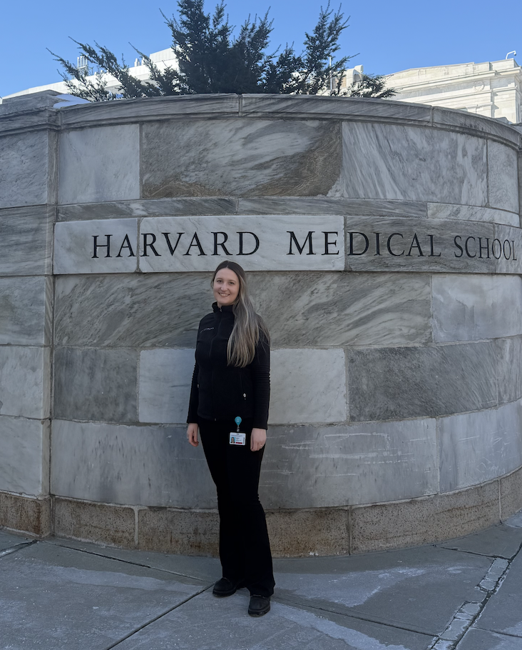

Turning healthcare data into evidence and insight.
I am a biostatistician and PhD Candidate working at the intersection of real-world evidence, epidemiology, predictive modelling, oncology, and AI in healthcare.
Download CV Contact me
About
I work on clinical and epidemiological data to generate evidence supporting decision-making in oncology and public health. My experience includes real-world data analysis, survival analysis, predictive modelling, radiomics, systematic reviews, and meta-analyses.
Expertise
Real-World Evidence
Clinical datasets, epidemiological data, treatment outcomes, toxicity profiles, and prognostic factors.
Statistical Modelling
Survival analysis, competing risks, regression modelling, validation studies, and meta-analysis.
AI & Radiomics
Predictive modelling using imaging-derived features from PET, CT, MRI, ultrasound, and mammography.
Selected Work
European Institute of Oncology
Research Fellow in Biostatistics working on oncology, epidemiology, real-world data analysis, AI applications, and predictive modelling.
Harvard Medical School
Visiting Research Scholar at Brigham and Women’s Hospital, TIMI Study Group.
Publications
47 peer-reviewed publications · H-index 10
Collaborations
Euromelanoma Program, M-SKIP Network, AI and Radiomics Board, AIRC-funded research projects.
Skills
- R, Python, SQL
- Real-world evidence generation
- Survival analysis and competing risks
- Predictive modelling and machine learning
- Systematic reviews and meta-analyses
- Scientific reporting and statistical analysis plans
Contact
Email: auroragaeta@gmail.com
ORCID: 0000-0002-4944-7685